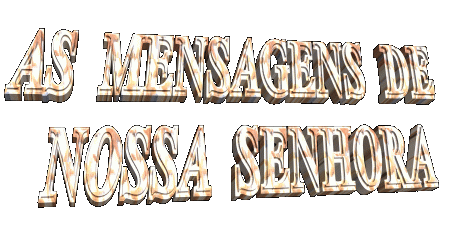
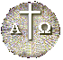
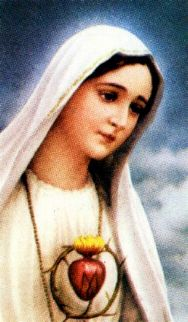
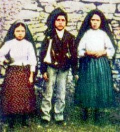
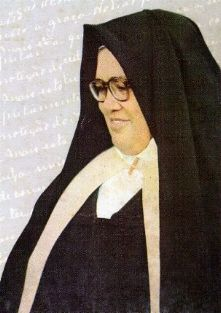
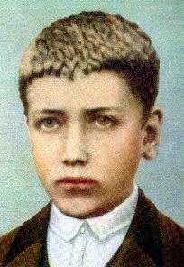
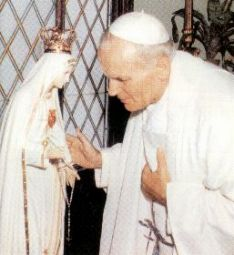
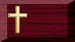
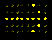

Nos diálogos com os videntes, a VIRGEM MARIA falou:
“Vistes o Inferno para onde vão as almas dos pobres pecadores. Para as salvar, DEUS quer estabelecer no mundo a devoção a MEU IMACULADO CORAÇÃO. Se fizerem o que Eu vos disser, salvar-se-ão muitas almas e terão paz. A guerra vai acabar”. (De fato, meses após acabou a 1ª guerra mundial)... “Mas se não deixarem de ofender a DEUS, no pontificado do Papa Pio XI (1922/ 1939) começará outra pior. Quando virdes uma noite alumiada por uma luz desconhecida, sabei que é o Grande Sinal que DEUS vos dá, de que vai punir o mundo de seus crimes através da guerra, da fome e de perseguições à Igreja e ao Santo Padre”. (Como a humanidade não se importou com o Aviso Divino e não buscou a conversão, Lúcia viu o “Grande Sinal” na magnífica aurora boreal que iluminou o Céu na madrugada do dia 26 de Janeiro de 1938. A Segunda Grande Guerra Mundial começou logo a seguir em 1939, quando a Alemanha apoderou-se da Áustria e invadiu o território dos Sudetos na Checoslováquia).
(Livro: O Segredo de Fátima, escrito pela Irmã Lúcia, pagina 90)
É importante deixar em evidência, que NOSSA SENHORA Se empenhou em alertar o mundo com bastante antecedência, para evitar a guerra e todas as suas sinistras consequências, mas a humanidade não acreditou.
Ela disse:

“Para impedir a guerra, virei pedir a Consagração da Rússia a MEU IMACULADO CORAÇÃO e a Comunhão Reparadora no primeiro sábado de cada mês. Se atenderem a Meus pedidos, a Rússia converter-se-á e terão paz”. (Todavia, somente em 1942 foi feita pelo Papa Pio XII, a primeira Consagração do Mundo a NOSSA SENHORA. Já era tarde, mas serviu para acabar com a Segunda Guerra Mundial, que tanta desgraça causou aos povos de muitas nações. A Consagração dos povos russos, especificamente, como foi solicitado por nossa MÃE SANTÍSSIMA, só foi realizada em 1982 pelo Papa João Paulo II, apesar das advertências maternais da VIRGEM MARIA em 1917): ... “Se não, (a Rússia) espalhará os seus erros pelo mundo, promovendo guerras e perseguições à Igreja. Os bons serão martirizados. O Santo Padre terá muito que sofrer. Várias nações serão aniquiladas”. (Foi exatamente o que aconteceu).( Livro: NOSSA SENHORA DA FÁTIMA, escrito pelo Padre Luís Gonzaga Fonseca, paginas 33 a 35).

"COMUNHÃO REPARADORA"
Em 10 de Dezembro de 1925, NOSSA SENHORA mostrou a Irmã Lúcia o Seu Sagrado Coração cercado de espinhos, representando as ingratidões e blasfêmias que a todo o momento a humanidade ingrata crava Nele. "Tu, ao menos, vê de ME consolar e diz também, que todos aqueles que durante cinco meses, ao primeiro sábado, se confessarem, receberem a Sagrada Comunhão, rezarem um Terço e ME fizerem 15 minutos de companhia, meditando nos 15 Mistérios do Rosário, com o fim de ME desagravar, EU prometo, assistir-lhes na hora da morte, com todas as graças necessárias a sua salvação". Ela nos convida a realizar a "Comunhão Reparadora", para consolar e desagravar a SANTÍSSIMA TRINDADE e o Seu Sagrado e Imaculado Coração, por causa de todos pecados, transgressões e blasfêmias que diariamente são perpetrados contra ELES. Para participar, o fiel deverá estar em "estado de graça", ou alcançar este estado através da Confissão Sacramental, preparando-se dignamente para receber o SENHOR na Sagrada Eucaristia em cinco (5) primeiros sábados de cada mês, seguidamente, e após a Santa Missa, fazer companhia a NOSSA SENHORA durante quinze (15) minutos, dentro da Igreja, diante de Sua Imagem, refletindo sobre os quinze mistérios do Rosário, e em seguida, Rezar um Terço, na Igreja ou em qualquer outro local. NOSSA MÃE SANTÍSSIMA promete: a todos que exercitarem este carinho para com Ela e a SANTÍSSIMA TRINDADE, a Sua preciosa e eficaz proteção, assistindo e dando assistência ao fiel, na hora da morte, "com todas as graças necessárias para a salvação de sua alma".

Além das Mensagens Urgentes, dos Ensinamentos e Recomendações, NOSSA SENHORA confiou aos três pequenos pastores "Três Segredos":

A propósito da forte impressão que o Inferno lhe causou, a Irmã Lúcia escreveu numa carta ao Bispo de Leiria: "Esta visão foi num momento, e graças à nossa boa MÃE CELESTE, que antes nos tinha prevenido com a promessa de nos levar para o Céu. Se assim não fosse, creio que teríamos morrido de susto e pavor". Ela explica na carta, que o Inferno é formado por um imenso mar de chamas onde os condenados flutuam e suas almas pecadoras são devoradas pelas labaredas eternas, queimando e elevando como fagulhas de um grande incêndio.
Também faz parte do Primeiro Segredo um aviso de NOSSA SENHORA sobre a Guerra: "A 1ª Grande Guerra Mundial vai acabar... todavia DEUS quer a conversão da humanidade, caso contrário acontecerá uma outra guerra muito pior"...

2º Segredo - É divido em duas partes:
2.1 -
INSTITUIÇÃO DA DEVOÇÃO AO IMACULADO CORAÇÃO DE MARIA 
2.2 - CONSAGRAÇÃO DA RÚSSIA AO IMACULADO CORAÇÃO - Ela pediu que todos os Bispos do mundo unidos ao Santo Padre, o Papa, fizessem a "Consagração da Rússia ao seu Imaculado Coração.
NOSSA SENHORA prometeu, que se atendessem estes dois pedidos, a Rússia ia se converter, muitos pecadores iam fazer penitência e o mundo ia viver um período de paz. Caso contrário, o mal cresceria, os dirigentes da nação comunista espalhariam os seus erros e o materialismo ateu por todas as partes, cresceria a "apostasia" e nasceria a "impiedade". Na sequência, ia acontecer uma devastadora Guerra Mundial (a Segunda) onde morreriam muitas pessoas e nações serão dizimadas.
3º Segredo - O Terceiro Segredo não foi revelado naquela época. Irmã Lúcia, por recomendação da VIRGEM MARIA, guardou-o com o maior zelo e respeito.

Como os "Avisos" e as "Revelações" de NOSSA SENHORA não foram levados em consideração pela humanidade e principalmente pelas autoridades, que permaneceram indiferentes, em 1939 começou a Segunda Grande Guerra Mundial com satânica violência, envolvendo muitas nações.
De um lado, alinharam-se as potências agressoras, encabeçadas pela Alemanha, com participação da Itália e uma efetiva colaboração do Japão, formando o chamado “Eixo”, que enfrentou e agrediu os demais países, que formaram o bloco dos "Aliados" , como eram chamados os países que se agruparam no outro lado. Esses em nome da justiça e do direito, receberam a colaboração mundial e foram comandados pelos Estados Unidos da América do Norte, Inglaterra, França e posteriormente ajudados pela União Soviética.
Terminada a Segunda Grande Guerra
Mundial em 1945, era 
Apesar de tudo o que aconteceu, da avassaladora e terrível destruição, parece que a humanidade esqueceu muito rápido aquelas dores e aqueles cruéis sofrimentos! Hoje o mundo vive mergulhado numa impressionante indiferença, buscando decididamente só o conforto e o prazer pessoal. Poucos se interessam pelos "Avisos" enviados pelo SENHOR e a maioria mantém-se distante, essencialmente preocupada com o "presente de sua vida". Para onde caminhará a humanidade?


